ZBOX MAGNUS EN275060TCわずか2.65Lに RTX 5060 Ti 16GB を凝縮
GeForce RTX 5060 Ti 16GB と Core Ultra 7 255HX を 2.65L の小型筐体に収めたミニPC「ZBOX MAGNUS EN275060TC」。 3DMark（グラフィックス性能）・GPUレンダリング・画像生成AI・CPU・写真編集まで、社内計測のベンチマークから 前世代EN機（RTX 4070 Laptop）との世代差、16GB VRAM が効くAI用途、そして 複数回計測でのばらつき（安定性）を、用途選定の参考となるよう中立に読み解きます。
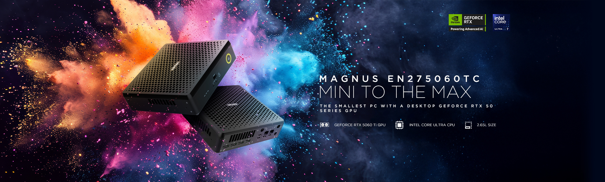
実測サマリー（3行）
- 3DMark（グラフィックス性能）・GPUレンダリングで 前世代EN機（モバイル RTX 4070 Laptop / EN374070C）を大きく上回る（Speed Way 4,119 / Steel Nomad 3,620 / Time Spy Extreme 7,674、Blender 4,327）。3D系は前世代EN機比で約+36〜40%。
- 16GB GDDR7 で画像生成AI「Stable Diffusion」が実用域 — ComfyUI SDXL 12.08 秒/枚（4070 Laptop機より約20%高速）。8GBクラスでは載りにくいモデル/解像度にも余裕で、容量面で有利。
- Core Ultra 7 255HX（20コア）は Cinebench CPU 5,618 pts。3DMark・GPUレンダリングは cv 1%未満と安定（Cinebench CPU は複数回計測で 2.6%）。テスト構成は 32GB / 高パフォーマンス。
2.65L に「最新世代GPU＋20コアCPU」を収めた業務機
ZBOX MAGNUS EN275060TC は、ZOTAC のミニPC「ZBOX MAGNUS（E シリーズ）」のうち、 GeForce RTX 5060 Ti 16GB（Blackwell 世代 / DLSS 4）と Intel Core Ultra 7 255HX（20コア）を組み合わせたモデルです。 容積はわずか 2.65L・高さ 62mm。天板のハニカムメッシュで吸気し、前面・背面に豊富な I/O を備えながら、デスク上・什器内へ収まる省スペース筐体にまとめられています（壁掛けブラケット同梱）。
本機はベアボーン構成で、メモリ・ストレージは導入側で選定できます（本レビューのテスト機は 32GB DDR5-5600（16GB×2）＋ 1TB NVMe SSD）。 映像出力は DisplayPort 2.1b×3＋HDMI の最大4画面、有線は 2.5GbE×2、無線は Wi-Fi 7、外部拡張に Thunderbolt 4×2。 マルチディスプレイのサイネージ／可視化端末や、ネットワーク冗長を要する設置にも対応しやすい構成です。
GPUGeForce RTX 5060 Ti とは
NVIDIA の最新世代「Blackwell」（RTX 50 シリーズ）のミドル向けデスクトップGPU。本機の搭載モデルは VRAM 16GB（GDDR7 / 128-bit）。前世代に対し、GDDR7 メモリ・フレーム生成を強化した DLSS 4・新世代のレイトレ／AI（Tensor）ユニットを備えます。
ポイントゲームに加えてローカルでのAI画像生成・推論の需要が広がり、描画性能だけでなく VRAM容量（扱えるモデル規模・解像度）が重視されるようになっています。RTX 5060 Ti はミドル帯ながら 16GB を確保したモデルで、高解像度の写真・映像編集やローカルAIで容量に余裕を持たせやすい位置づけです。
CPUCore Ultra 7 255HX とは
Intel の最新世代「Core Ultra（シリーズ2 / Arrow Lake-HX）」の高性能向けCPU。高性能Pコア8＋高効率Eコア12 の 20コア / 20スレッド。前世代までの Hyper-Threading を採用せず、物理コア重視へ切り替わった世代です。
ポイント機能ブロックを分けた「タイル（チップレット）」構成と、AI処理用ユニット（NPU）を備える「AI PC」世代。ソケット式のデスクトップ版に対し、末尾 HX は基板直付けのモバイル向けパッケージで、省電力・小型化に最適化された系統です（ベアボーンでCPUを選べないのはこのため）。これにより、デスクトップ級のコア数を小型筐体に収めています。
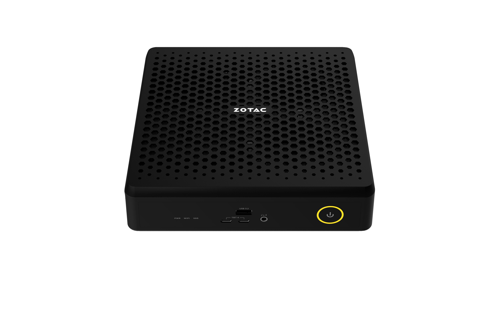
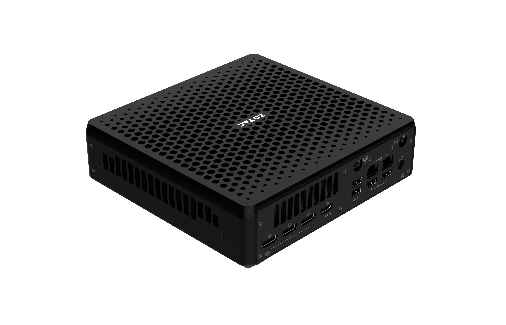
実機のハードウェア確認（GPU-Z / CPU-Z）
テスト機の構成を GPU-Z・CPU-Z のメイン画面で確認します。GPU は ZOTAC GAMING GeForce RTX 5060 Ti（16GB GDDR7 / 128-bit / Blackwell）、CPU は Core Ultra 7 255HX（20スレッド / Arrow Lake）。GB206・Boost クロック・PCIe リンク・ドライバ等の詳細は下の GPU-Z／CPU-Z のとおりで、いずれもカタログ仕様どおりの個体です。
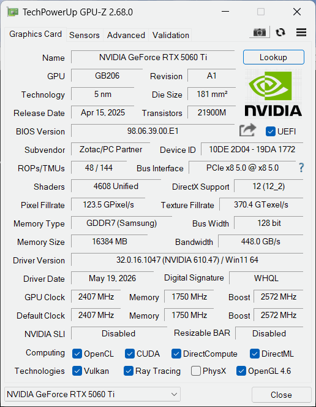
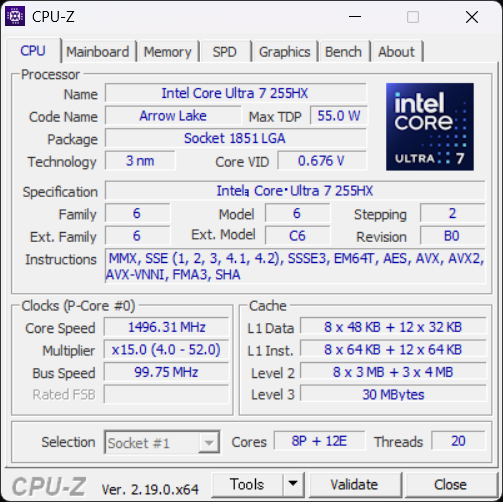
テスト環境・比較機材・計測方法
テスト構成（実機計測）
| 製品 / SKU | ZOTAC ZBOX MAGNUS EN275060TC（E シリーズ / Windows） |
|---|---|
| GPU | ZOTAC GAMING GeForce RTX 5060 Ti 16GB（GDDR7・128bit / Blackwell） |
| GPUドライバー | NVIDIA GeForce 610.47（WHQL）／ コア GB206・Boost 2,572MHz・PCIe x8 5.0 は GPU-Z（§01）参照 |
| CPU | Intel Core Ultra 7 255HX（20C / 20T） |
| メモリ（テスト構成） | 32GB DDR5-5600（16GB×2） |
| ストレージ | Crucial P3 Plus 1TB NVMe（CT1000P3PSSD8） |
| OS | Windows 11 Home 25H2（Build 26200） |
| 電源プラン | 高パフォーマンス |
| 計測日 | 2026-06-23 |
製品仕様（カタログ / EN275060TC）
| グラフィックス | ZOTAC GAMING GeForce RTX 5060 Ti 16GB GDDR7 / 128-bit / Blackwell / DLSS 4 |
|---|---|
| プロセッサー | Intel Core Ultra 7 255HX 20コア / 2.4–5.2GHz |
| メモリー上限 | 2 × DDR5-6400 CSODIMM / 5600 SO-DIMM（最大96GB） |
| ストレージ | 1 × M.2 NVMe PCIe 5.0 ／ 1 × M.2 NVMe PCIe 4.0・SATA |
| 映像出力 | 3 × DisplayPort 2.1b（UHBR20）／ 1 × HDMI 2.1b（最大4画面） |
| ネットワーク | 2 × 2.5GbE ／ Wi-Fi 7（802.11be）/ Bluetooth 5.4 |
| インターフェース | 前面: Thunderbolt 4 ×2・USB 3.2 Gen2 Type-A ×1 背面: USB 3.2 Gen2 Type-A ×4 |
| 電源 / 設置 | 330W 外部ACアダプター（同梱）／ 壁掛け対応（ブラケット同梱） |
| 外形・容積・重量 | 210 × 203 × 62.2 mm（2.65L）／ 約2.03kg（ACアダプタ除く） |
| 対応OS | Windows 11（IoT Enterprise LTSC 選択可・最大10年サポート） |
製品カタログで全仕様を見る（ZBOX MAGNUS EN275060TC）→ZOTAC 直販ストア →
比較機材（すべて ZBOX MAGNUS 系）
公平性のため、比較は同じ ZBOX MAGNUS 系の実機に限定しています。最上位の参考として RTX 5070 Ti（EU27507TC） を併載し、RTX 5070 は Intel版（EU275070C）と AMD版（ER98N5070C）、RTX 4070 は Desktop（ERP74070C）と Laptop（EN374070C）を併せてラベルで区別します。各機は出荷時の代表構成（GPU・CPU・モデル）で計測しました。
| 本記事の表記 | モデル | SKU | CPU |
|---|---|---|---|
| RTX 5070 Ti | MAGNUS ONE | EU27507TC | Core Ultra 7 265 |
| RTX 5070（Intel） | MAGNUS ONE | EU275070C | Core Ultra 7 265 |
| RTX 5070（AMD） | MAGNUS ONE | ER98N5070C | Ryzen 9 9850HX |
| RTX 5060 Ti（本機） | MAGNUS EN | EN275060TC | Core Ultra 7 255HX |
| RTX 4070 Desktop | MAGNUS ONE（前世代） | ERP74070C | Core i7-13700 |
| RTX 4070 Laptop | MAGNUS EN（前世代） | EN374070C | Core i7-13700HX |
MAGNUS ラインナップでの位置づけ
3DMark（グラフィックス性能）— 前世代EN機（4070 Laptop）を約4割上回る
DX12 Ultimate／レイトレを含む 3DMark の3テストでは、RTX 5060 Ti が前世代EN機（モバイル RTX 4070 Laptop 搭載の EN374070C）を Speed Way +40%・Steel Nomad +36%・Time Spy Extreme +39% と明確に上回りました。 上位の RTX 5070 には届かないものの、Blackwell 世代の効率の良さがはっきり出ています。 いずれも cv（変動係数）は1%未満で、複数回計測でのばらつきは小さく安定しています。
GPUレンダリング — Cinebench も Blender も前世代EN機を引き離す
GPU レンダリングでも前世代を明確に上回ります。Cinebench 2026 GPU は 61,312 pts で RTX 4070 Laptop 機（45,669）を約34%、 Blender Benchmark（OptiX）も 4,327 で同機（3,608）を約20%上回りました。 いずれも上位の RTX 5070 には届きませんが、ミドルとして順当な位置です。
なぜ「デスクトップGPU」なのか — ノートGPUとの違い
本機の要点は、ノートPC向けではなく デスクトップ版の RTX 5060 Ti を 2.65L に収めた点です。 同じ CUDA コア数でも、ノート向けGPUは省電力設計で電力上限（TDP）が小さく、デスクトップ版は高い電力上限で本来の性能を引き出せます。 前章で本機が前世代EN機（モバイル RTX 4070 Laptop）を大きく上回った背景にも、世代更新に加えてこのクラス差があります。
| GPU | CUDAコア | TDP | VRAM / バス幅 |
|---|---|---|---|
| RTX 5060 Ti Desktop（本機） | 4,608 | 最大180W | 16GB GDDR7 / 128-bit |
| RTX 5070 Laptop | 4,608 | 50–100W | 8GB GDDR7 / 128-bit |
| RTX 5060 Laptop | 3,328 | 45–100W | 8GB GDDR7 / 128-bit |
出典: ZOTAC 製品資料。同じ CUDA コア数でも電力上限（TDP）の差が実性能差につながります。ノート向け 4608 コア（RTX 5070 Laptop）に対し、本機のデスクトップ 5060 Ti は最大180Wで動作します。
ローカル画像生成AI（Stable Diffusion）— 16GB VRAM の余裕が効く
画像生成AI「Stable Diffusion（SDXL）」を ComfyUI で実測すると、RTX 5060 Ti は 1024×1024 / 30ステップで 12.08 秒/枚（4.97 枚/分）、 Hires.Fix（1024→1536）で 38.52 秒/枚を記録。RTX 4070 Laptop 機（15.15 / 47.89 秒/枚）より約20%高速でした。 上位の RTX 5070 はさらに速いものの、本機の見どころは速度よりも 16GB の GDDR7 です。 VRAM 8GB クラスでは載りにくいモデルや解像度・バッチにも余裕があり、容量面で有利なため、オンデバイスで扱える生成・推論の幅が広がります。
CPU性能と安定性 — 20コアの 255HX は高く、そして安定
Core Ultra 7 255HX（20C/20T）は Cinebench 2026 CPU で 5,618 pts。 前世代EN機（EN374070C）の Core i7-13700HX（3,645）を約54%上回り、AMD版 RTX 5070 機（ER98N5070C）の Ryzen 9 9850HX（5,286）を超え、上位の Core Ultra 7 265 搭載機（5,825 / 5,760）に迫ります。 複数回計測でのばらつきは cv 2.58%（3回計測中1回が 5,376 に低下）で、9850HX（8.09%）や i7-13700HX（5.48%）よりは安定しています。
全コアを持続的に使う CPU レンダリングも Blender Benchmark の CPU モードで実測しました。本機 Core Ultra 7 255HX は 合算 372（3回計測の中央値・cv 0.6%）。上位の Core Ultra 7 265（5070 Ti 版 384 ／ 5070 版 381）に次ぐ位置で、その差は数%以内の僅差です。前世代の Core i7-13700（252）には約47%の差をつけました。
※ Blender CPU の複数回計測でのばらつき（cv）: 本機 Core Ultra 7 255HX = 0.6% ／ Core Ultra 7 265（5070 Ti）= 0.6% ／ Core Ultra 7 265（5070）= 0.3% ／ Core i7-13700 = 4.1%。値はいずれも3回計測の中央値。AMD版 5070（Ryzen 9 9850HX）・4070 Laptop（i7-13700HX）は Blender CPU を追加計測中で、整い次第この比較に追記します。
写真編集・オフィス（Procyon）
UL Procyon の写真編集（Photoshop＋Lightroom Classic）で 8,678、 オフィス（Essentials）で 4,430。Essentials は前世代EN機（3,728）を約19%上回ります。 Photo は GPU 単体ではなく CPU／メモリ／iGPU を含む複合ワークロードで、32GB 構成の本機は RTX 4070 Desktop 機（8,771）に肉薄し、上位の RTX 5070 機との差も小さくまとまっています。
複数回計測でのばらつき（再現性・安定性）
本プロジェクトが重視する 安定性指標。複数回計測を実施したテストの変動係数（cv：標準偏差÷平均×100%）を一覧します。 本機は 3DMark・GPUレンダリング（Cinebench GPU／Blender）が cv 1%未満と安定。Cinebench CPU は複数回計測で 2.58%（3回計測中1回が低下）、Procyon Essentials は 1.45% と CPU 系はやや振れますが、いずれも実用上の再現性は確保しています。
| テスト | 中央値 | min–max | cv% | 計測回 |
|---|---|---|---|---|
| Time Spy Extreme | 7,674 | 7,657–7,674 | 0.13 | 3 |
| Speed Way | 4,119 | 4,102–4,124 | 0.28 | 3 |
| Steel Nomad | 3,620 | 3,619–3,650 | 0.49 | 3 |
| Cinebench GPU | 61,312 | 61,225–61,466 | 0.20 | 3 |
| Blender (OptiX) | 4,327 | 4,324–4,329 | 0.07 | 3 |
| Cinebench CPU | 5,618 | 5,376–5,629 | 2.58 | 3 |
| Procyon Essentials | 4,430 | 4,406–4,528 | 1.45 | 3 |
※ ComfyUI と Procyon Photo は1回計測のため cv は非算出。Blender と Procyon Essentials は3回計測の中央値。
安定性を支える冷却構造
小型筐体ながら複数回計測でのばらつきが小さい背景には、デスクトップGPUを 2.65L に収めるための冷却設計があります。 分解図のとおり、天板のハニカムメッシュ直下に 大型のクーラー（ファン＋ヒートシンク）を収め、CPU／GPU の排熱経路を確保。 長時間の連続負荷でもクロックを維持しやすく、実測の cv 1%未満（3DMark・GPUレンダリング）という再現性の高さに表れています。
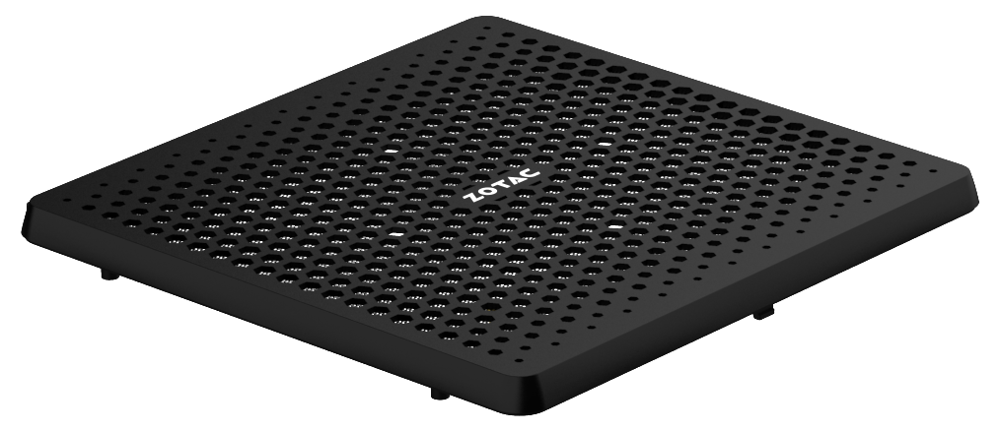
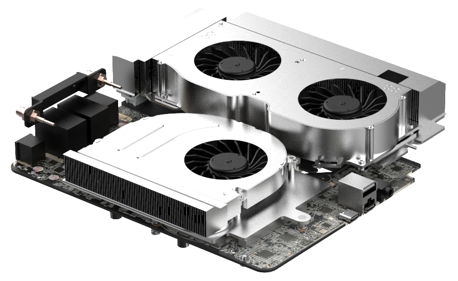
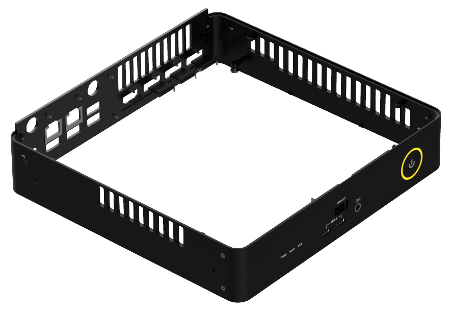
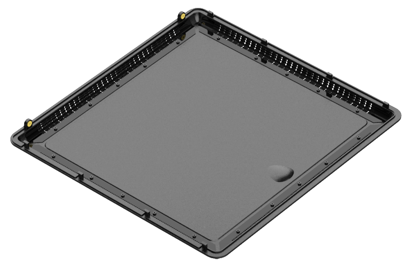
負荷段階別の実測 — 待機・ゲーム相当・最大負荷
ベンチマーク実行中の GPU を nvidia-smi で1秒間隔で連続記録し、負荷段階ごとに GPU 温度・コアクロック・消費電力・VRAM を集計しました。小型筐体でも温度とクロックが乱れないかを、実センサー値で確認します。
| 状態 | GPU温度 中央/ピーク | コアクロック | 消費電力 中央/ピーク | ファン | VRAM |
|---|---|---|---|---|---|
| 待機（アイドル） | 約33°C | アイドル | 約7W | — | 0.9GB |
| ゲーム相当（3DMark グラフィックス負荷） | 70 / 76°C | 約2,730 MHz | 180 / 184W | — | 6.2GB |
| 最大負荷（AI連続生成 ComfyUI） | 75 / 78°C | 2,707 MHz | 180 / 185W | — | 13.1GB |
注目は高負荷でもコアクロックが約 2,707 MHz を維持している点です。AI 連続生成中も GPU 温度は 78°C 前後にとどまり、消費電力は GPU の電力上限である約 180W でほぼ一定。つまり本機は熱ではなく電力リミットで頭打ち＝サーマルスロットリングは見られません。2.65L の小型筐体でも、デスクトップ RTX 5060 Ti を温度で絞らず回せています。とりわけ AI 連続生成では VRAM が 13.1GB（16GB 中）まで使われており、16GB という容量がローカル AI の余裕に効いていることが実測でも確認できます。
CPUレンダ中のCPU温度 — Blender CPU（全コア持続負荷）
GPU に続き、CPU 側も全コアを持続的に使う Blender CPU レンダの区間で温度・電力・クロックを実測しました。レンダ中はコア負荷が 100% を維持し、パッケージ温度は中央値 70°C・ピーク 91°C で頭打ちします。消費電力は負荷中の平均 62W・最大 69W と開きが小さい定常型で（電力見積りが立てやすい）、全コアレンダ時のクロックは約 3,575MHz（約3.6GHz）を保ちます（シーン切替の谷で瞬間 5GHz 台に見えるのはアイドル時に単コアがブーストしたもの）。温度は Tjmax（約 100°C）まで余裕があり、サーマルスロットリングは見られませんでした（Blender CPU スコアの cv も 0.6% と安定）。温度は本個体の実測値で、機体差・室温・グリス状態で変動します（機種間の温度比較は行いません）。
| 負荷 | CPUパッケージ温度 中央/ピーク | 全コアレンダ時クロック | CPU消費電力 負荷中の平均 / 最大 | コア負荷 |
|---|---|---|---|---|
| Blender CPU（全コア持続） | 70 / 91°C | 約3,575 MHz | 62 / 69W | 100% |
設置自由度と接続性 — 壁掛け対応・Thunderbolt 4・豊富なUSB
2.65L ながら I/O は充実しています。前面は Thunderbolt 4（USB-C）×2／USB 3.2 Gen2 Type-A×1／オーディオコンボ。 背面は DisplayPort 2.1b×3＋HDMI×1（最大4画面）／USB 3.2 Gen2 Type-A×4／2.5GbE×2／Wi-Fiアンテナ×2／DC-IN。 マルチディスプレイのサイネージ・可視化端末、ネットワーク冗長や VLAN 分離が要る設置、Thunderbolt による外部GPU／高速ストレージ拡張まで、業務用途の取り回しに余裕があります。
② Thunderbolt 4 ×2 — 外部GPU・高速ストレージ・ドッキングまで1ポートで拡張。③ USB 3.2 Gen2 Type-A ×5（前面1＋背面4）で周辺機器も余裕。
④ 4画面出力（DisplayPort 2.1b ×3＋HDMI）＋ ⑤ Dual 2.5GbE / Wi-Fi 7。小型機ながら据置ワークステーション並みの拡張性・設置自由度を備えます。
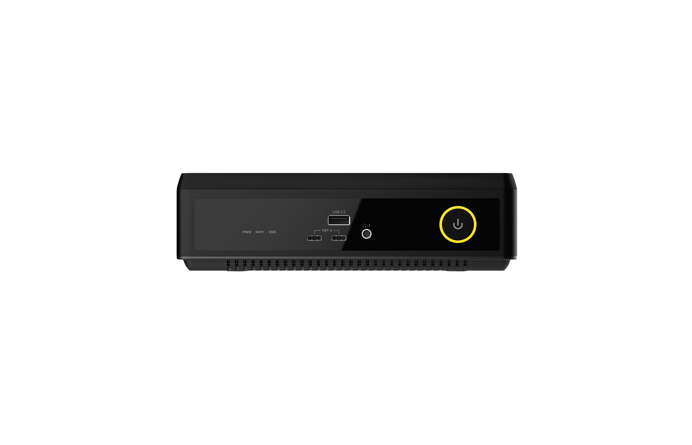
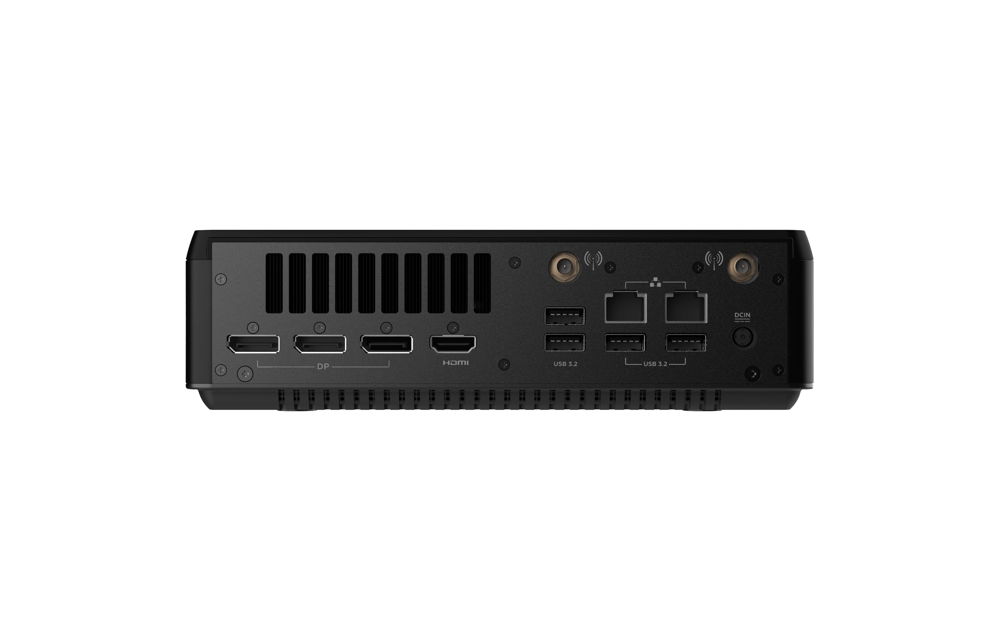
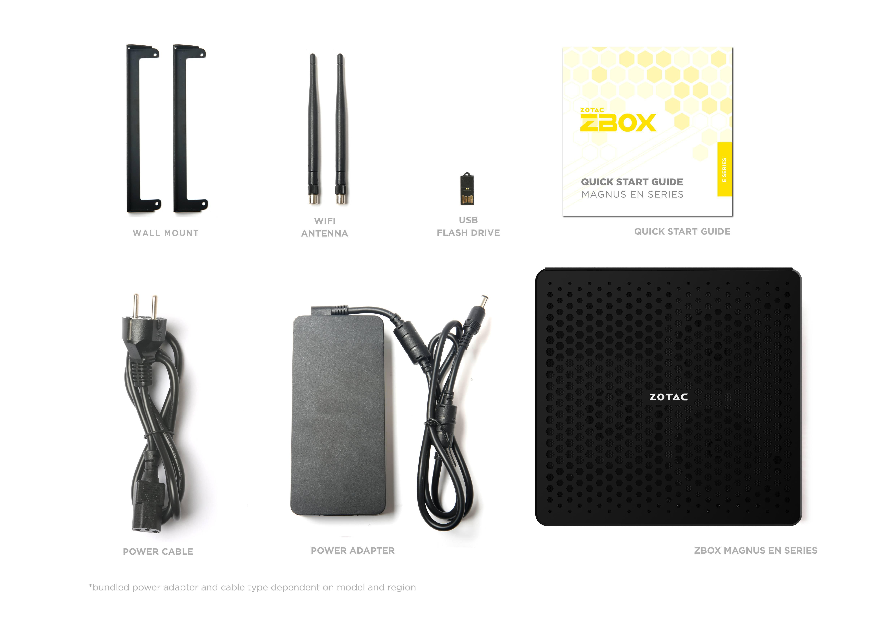
想定される用途
ここまでの実測を踏まえ、本機に適した代表的な用途を、計測結果と結びつけて整理します（中立・実測の範囲での想定です）。
ローカルAI推論・画像生成（オンプレ）
16GB GDDR7 と 20コアCPU により、ネットワークに依存しないオンプレAIをこのサイズで構築できます。 画像生成AI（Stable Diffusion）は ComfyUI SDXL 12.08 秒/枚、16GB VRAM で 8GB級では載りにくいモデル・解像度にも対応でき、容量面で有利です。 画像認識・QA応答・映像解析などをローカル完結させたい現場に向きます。
多画面サイネージ・可視化端末
HDMI 2.1b＋DisplayPort 2.1b×3 で 最大4画面、Dual 2.5GbE と壁掛け対応。 高フレームレート・高解像度のリッチコンテンツも、安定したグラフィックス性能（cv 1%未満）で再生でき、棚下や壁面に隠した省スペース設置が可能です。 Windows 11 IoT Enterprise LTSC を選べば、強制アップデートを抑えた無人・長期運用にも適します。
クリエイティブ制作の補完
Cinebench GPU 61,312 / Blender 4,327 / Procyon Photo 8,678 と、省スペースでローカルGPUレンダリングや映像・写真編集をこなせます。 クラウド費用を抑えつつ、設置スペースの限られた制作現場や展示・窓口にも導入しやすい構成です。
まとめ — どんな現場に向くか
ZBOX MAGNUS EN275060TC は、2.65L の省スペースで「最新世代GPU＋20コアCPU＋16GB VRAM」を安定して回したい現場に向く一台です。 3DMark（グラフィックス性能）・レイトレ・AI・GPUレンダリング（Cinebench GPU／Blender）で前世代EN機（RTX 4070 Laptop）を明確に上回り、グラフィックス系の計測再現性も高い。 純粋な GPU レンダリング（Blender）のスループットを最優先するなら上位の RTX 5070 が候補になりますが、 「設置性・安定性・16GB VRAM・豊富な I/O」のバランスで選ぶなら、本機はミドルの要として導入しやすい構成です。
適所マップ
向く
- ローカルAI画像生成・推論（16GB VRAM が効く）
- レイトレ対応の可視化・制作補完
- 4画面サイネージ／Dual 2.5GbE が要る設置
- 2.65L で安定運用したい SIer 業務機
他候補が向く
- Blender 等のGPUレンダリング最優先 → RTX 5070（MAGNUS ONE）
- 最高フレームのゲーミング単機 → 上位dGPU
付録: 全ベンチマーク結果
本記事チャートの元数値を一覧にまとめます（すべて 中央値。計測条件は §02、各機の識別も §02 の比較表を参照）。比較はすべて ZBOX MAGNUS 系。
| テスト | RTX 5070 TiEU27507TCCore Ultra 7 265 | RTX 5070（Intel）EU275070CCore Ultra 7 265 | RTX 5070（AMD）ER98N5070CRyzen 9 9850HX | RTX 5060 TiEN275060TC（本機）Core Ultra 7 255HX | RTX 4070 DesktopERP74070CCore i7-13700 | RTX 4070 LaptopEN374070CCore i7-13700HX |
|---|---|---|---|---|---|---|
| Time Spy Extremescore・高いほど良い | 12,501 | 10,562 | 10,365 | 7,674 | 7,833 | 5,527 |
| 3DMark Speed Wayscore・高いほど良い | 7,474 | 5,827 | 5,769 | 4,119 | 4,498 | 2,951 |
| 3DMark Steel Nomadscore・高いほど良い | 6,634 | 5,283 | 5,251 | 3,620 | 3,999 | 2,662 |
| Cinebench 2026 GPUpts・高いほど良い | 94,543 | 74,746 | 73,744 | 61,312 | 68,598 | 45,669 |
| Blender Benchmark (OptiX)score・高いほど良い | 7,666 | 6,010 | 5,899 | 4,327 | 5,320 | 3,608 |
| Cinebench 2026 CPUpts・高いほど良い | 5,825 | 5,760 | 5,286 | 5,618 | 4,024 | 3,645 |
| Blender Benchmark (CPU)score・高いほど良い | 384 | 381 | — | 372 | 252 | — |
| ComfyUI SDXL (1024)秒/枚・短いほど良い | 7.07 | 9.05 | 9.09 | 12.08 | 10.08 | 15.15 |
| ComfyUI SDXL Hires秒/枚・短いほど良い | 21.97 | 28.29 | 28.76 | 38.52 | 31.32 | 47.89 |
| Procyon Photo Editingscore・高いほど良い | 8,922 | 9,195 | 9,882 | 8,678 | 8,771 | 6,404 |
| Procyon Office (Essentials)score・高いほど良い | 4,907 | 4,884 | 4,766 | 4,430 | 4,685 | 3,728 |
凡例: 値は3回計測の中央値（ComfyUI / Procyon Photo のみ1回）。ComfyUI のみ「秒/枚（短いほど良い）」。Blender CPU の AMD版（ER98N5070C）・4070 Laptop（EN374070C）は未計測（—）。